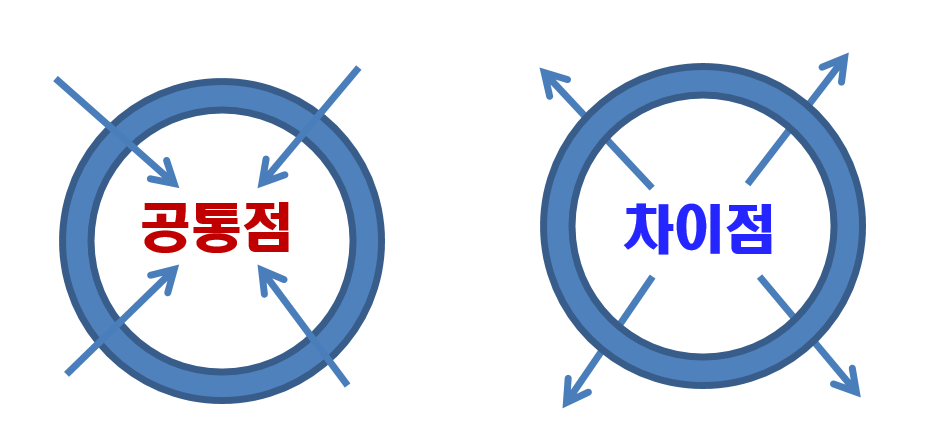

1. 표준보육과정, 누리과정에 의한 유아특수교육의 공통점
1) 발달 중심 교육
표준보육과정과 누리과정을 토대로 유아교육과 유아특수교육의 공통점은 발달 중심 교육이라는 점에서 출발한다. 두 교육과정 모두 연령에 따른 발달 단계를 고려해 운동, 적응, 사회성, 정서, 의사소통 등 다양한 영역에서 영유아가 습득해야 할 발달 과제를 명확하게 제시한다. 이와 같은 접근은 장애 영유아에게도 동일하게 적용되며, 장애 영유아가 정상발달을 보이는 영유아와 비교했을 때 도달해야 할 발달 목표를 중심으로 교육과정을 구성하게 된다. 즉, 장애 아동 또한 발달에 맞춘 교육적 지원을 받으며, 이는 발달의 연속성을 고려한 학습 과정으로 이어진다.
2) 통합적 교수전략 적용
교육방법론에서도 일반 유아교육과 유사한 교수전략이 적용된다. 비록 장애 영유아가 특수한 요구를 가질 수 있지만, 기본적인 교수법은 일반 유아에게 적용되는 전략과 일치하는 경우가 많다. 이러한 교육과정은 발달단계와 개별적인 요구를 반영하며, 유아의 전반적인 발달을 촉진하고 통합적 교육 환경을 조성하는 데 기여한다.
법적 기반 또한 두 교육 과정의 공통점 중 하나이다. 유아교육은 '유아교육법'과 '영유아보육법'에 의해 명확하게 규정되며, 영유아특수교육은 '특수교육법'에 따라 규정되고 있다. 이러한 법적 체계는 영유아들이 공정하게 교육을 받을 수 있도록 보장하며, 각 교육 과정의 목적과 방향을 명문화하고 있다.
3) 사회적 평등과 교육적 기회를 보장
재정적 지원 측면에서도 모든 영유아가 공평하게 양질의 교육 서비스를 받을 수 있도록 규정되어 있다. 이는 지역, 소득 수준, 기관의 유형에 관계없이 균등한 교육 기회를 제공받도록 하기 위한 것이다. 따라서 유아교육과 유아특수교육 모두 영유아의 발달을 중심으로 하되, 사회적 평등과 교육적 기회를 보장하는 점에서 공통점을 지닌다.

2. 표준보육과정, 누리과정에 의한 유아특수교육의 차이점
1) 개별화된 교육 제공
유아교육과 유아특수교육은 표준보육과정과 누리과정을 바탕으로 차이점이 명확하다. 유아교육은 모든 영유아를 대상으로 하며, 발달을 지원하고 전반적인 학습 경험을 제공하는 것을 목표로 한다. 반면, 유아특수교육은 특수교육법에 의해 장애로 명확히 진단된 아동만을 대상으로 하며, 이들의 특수한 발달 요구를 충족시키기 위한 개별화된 교육을 제공한다. 즉, 유아특수교육을 받기 위해서는 법적으로 장애 진단이 필수적이며, 이는 조기에 장애 명칭이 부여될 수 있는 위험을 내포한다.
2) 개별적 요구 충족
장애 진단은 유아와 가족에게 부정적인 인식을 불러일으킬 가능성이 있으며, 경계선 장애 아동이나 발달 지연 아동과 같이 명확한 장애 진단을 받지 않은 유아들은 특수교육 서비스에서 제외될 수 있다. 따라서 적격성 기준에서 유아교육과 유아특수교육의 큰 차이가 발생한다. 이러한 차이는 교육 접근 방식에서도 드러나며, 유아특수교육은 장애 아동의 개별적 요구를 충족시키는 데 중점을 두는 반면, 유아교육은 모든 유아가 보편적으로 받을 수 있는 교육을 제공한다.
3) 대상자 범위와 적격성
유아교육과 유아특수교육은 발달을 중심으로 한 교육과정과 법적 지원이라는 공통된 기반을 공유하지만, 대상자 범위와 적격성에서 차이가 존재한다. 이러한 차이는 교육 접근 방식과 서비스 제공 방식에서 차별을 만들어낼 수 있으며, 특정 장애를 명확히 진단받지 못한 유아들이 적절한 교육 서비스를 받지 못할 가능성을 내포하고 있다.
서혜전 (2003). 장애유아를 위한 통합교육. 서울: 학지사.
윤정인 (2016). 특수유아교육의 이론과 실제. 서울: 양서원.
2022.01.15 - [분류 전체보기] - 뇌의 구조와 기능 - 영아기에 성장급등기
뇌의 구조와 기능 - 영아기에 성장급등기
뇌의 구조와 기능은 영아기에 가장 중요 출생 시 신생아의 두뇌는 평균 300~400g 정도로 성인의 25~30% 정도에 불과하지만, 2세경이 되면 75%까지 증가하는 두뇌의 성장급등기(brain growth spurt)를 맞이
think-sis.co.kr
2024.09.22 - [특수장애] - 장애 유아 특수교육과정 5가지 모형 - 발달과 수준에 적합한 특수교육
장애 유아 특수교육과정 5가지 모형 - 발달과 수준에 적합한 특수교육
1. 발달주의 교육과정 모형 1) 발달주의 교육과정 모형은 아동 발달 이론에 기반하여, 아동이 정해진 발달 단계에 도달할 수 있도록 지원하는 것을 목표로 한다. 이 모형은 아동의 연령이나 발달
think-sis.co.kr